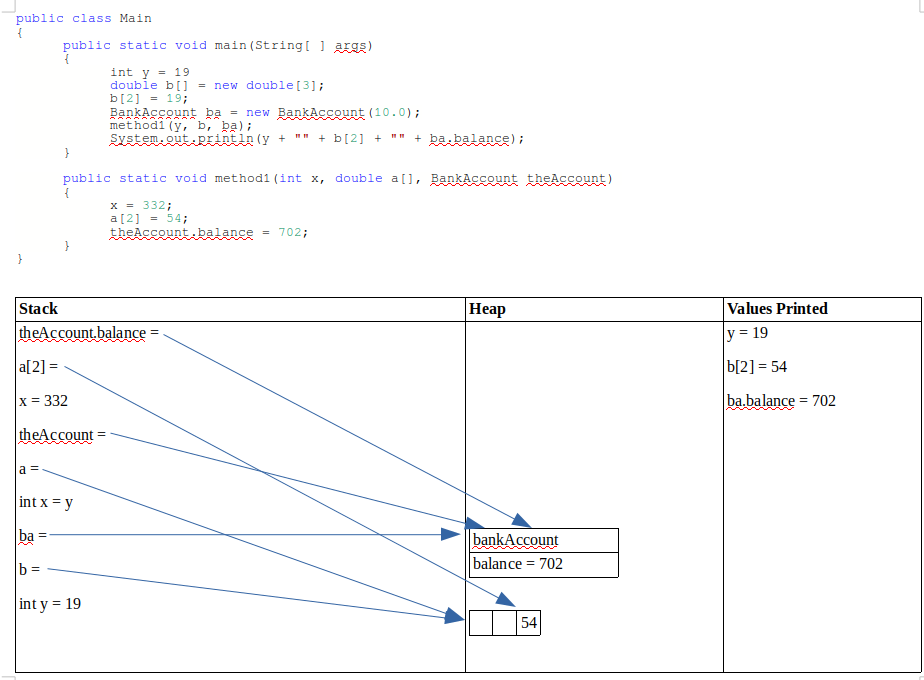

Primitive data types are the most basic data types available within the Java language. There are 8: boolean, byte, char, short, int, long, float, and double . These types serve as the building blocks of data manipulation in Java. Such types serve only one purpose — containing pure, simple values of a kind.
We have already explored and used int, double, Boolean, and char data types. Below are a few more,
Primitive data types always store a value
Reference data types are objects and do not store values, but instead point to a reference (or location) in the memory. Objects include arrays and Strings; they also include classes.
The video below provides further explanation,
The above example illustrates how different data types are handled in memory. When passing different data types to a method in a program, you should be mindful of how they are stored in the memory to avoid unexpected results.
The below example is illustrative,
